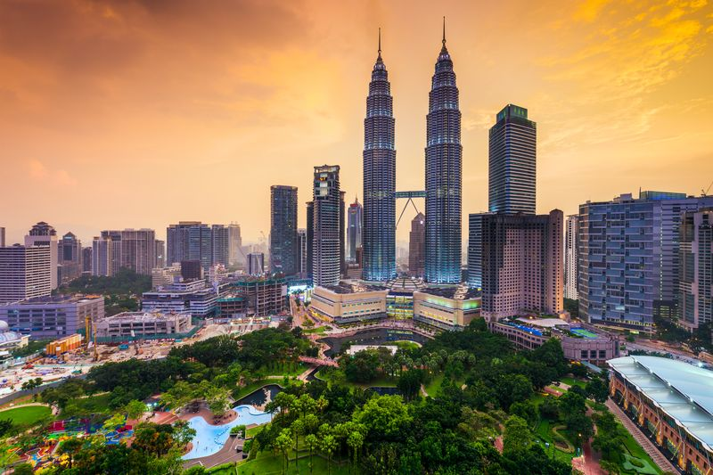

REUSSIR VOTRE VOYAGE EN MALAISIE
Les conseils de Thuc Nhi, notre Globe-Trotter, pour un voyage libre, authentique et personnalisé en Malaisie
La Malaisie est un pays du sud-est de l’Asie composée de la Malaisie péninsulaire
et de la Malaisie orientale, au nord de l’île de Bornéo. Ces 2 îles distantes de plus
de 700 kms présentent une diversité importante entre jungle et modernisme.
Sa capitale Kuala Lumpur est une ville hyper active avec une activité économique grandissante
où gratte-ciel sont omniprésents. Son architecture y est très variée avec des monuments
très contemporains et d’autres de style colonial.
Ici cohabite une grande mixité culturelle avec un quartier chinois, indien, portugais…
Mais la Malaisie c’est aussi des forêts luxuriantes qui satisferont les amateurs de
randonnées. Envie de farniente, les plages de Malaisie sont paradisiaques et ses fonds
sous-marins sont de toute beauté.
Choisir la bonne période pour partir en Malaisie
Le climat de Malaisie est équatorial, il y fait très chaud toute l’année.
Sur la côte Est, les températures élevées règnent tout au long de l’année. Elles sont ainsi
rarement inférieures à 23 °C et dépassent souvent les 30 °C.
Quant aux eaux de la mer de Chine sur la côte Est, elles se maintiennent, elles,
aux alentours de 29 °C.
Le climat de Malaisie sera donc parfait pour profiter de bains de mer quand bon vous semble.
Climat équatorial oblige, l’humidité sera également au rendez-vous.
Il y pleut en effet assez souvent, mais les précipitations prennent la forme d’orages
passagers et le soleil retrouve vite sa place dans le ciel.
| Jan. | Fév. | Mars | Avr. | Mai | Juin | Juil. | Août | Sept. | Oct. | Nov. | Déc. | |
|---|---|---|---|---|---|---|---|---|---|---|---|---|
| Côte Est | ||||||||||||
| Côte Ouest |
Nos coups de coeur
- 
Grimper en haut des Tours Petronas
Activité incontournable à Kuala Lumpur, l’ascension des tours jumelles permet de profiter d’un panorama vertigineux sur la capitale malaise. Elles appartiennent à la société de pétrole et culminent à 452 mètres, pour 88 étages. 
Visiter Georgetown à Penang
Dans Chinatown et Little India, découvrez la cité coloniale classée au patrimoine mondial de l’UNESCO: son architecture composée de shophouses, maisons de marchands traditionnelles et ses nombreux temples hindous et bouddhistes.
Visiter la mosquée de Cristal à Kuala Terengganu
La Mosquée de Cristal est un des plus beaux exemples d’architecture musulmane.
Observer la faune sauvage à Bornéo
Explorer la forêt vierge en randonnée et observer d’innombrables espèces animales. Partez à la rencontre des derniers peuples tribaux de Bornéo au cœur de la jungle.
Faire du snorkeling dans les îles
Prenez la direction des îles de Tioman ou de Perhentian et embarquer pour une sortie snorkeling en bateau, à la découverte des récifs coralliens.